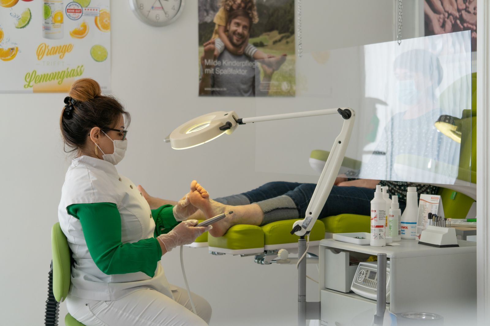
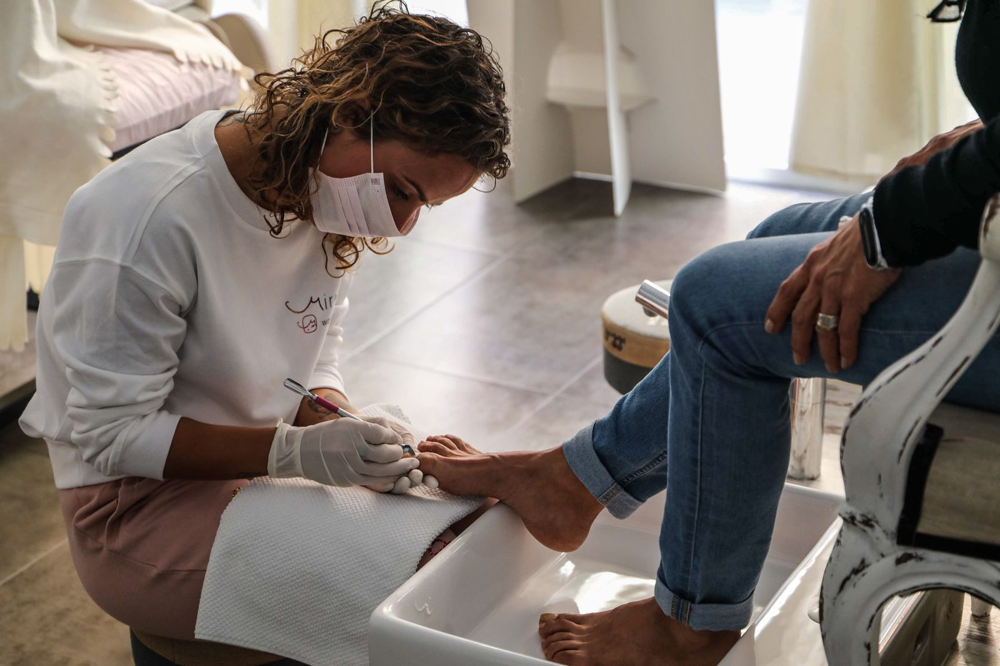

Problem Nails
Fungal nails, ingrown nails, thickened nails and nail surgery.
A well-established, family-run chiropody practice on Broadwell Parade — HCPC-registered podiatrists treating nail, skin, structural and diabetic foot conditions, with a second clinic in Tottenham.
Inside the clinic
A calm, properly equipped treatment room and a careful, thorough manner — for a routine nail trim or a more involved procedure.



What we treat
From routine nail care to nail surgery and diabetic foot checks — our podiatrists treat the full range of common and complex foot problems.
Our podiatrists are registered with the Health & Care Professions Council and are members of the Society of Chiropodists and Podiatrists.
Broadwell Parade in West Hampstead and Laurels Health Living Centre in Tottenham.
Saturday appointments at both clinics, plus Thursday evenings in West Hampstead and Mondays until 7pm in Tottenham.

Find us
Our West Hampstead clinic sits at 4 Broadwell Parade, just off Broadhurst Gardens — a short walk from West Hampstead station. Look out for the sign above the door.
Patient reviews
A selection of genuine five-star reviews left by our patients.
★★★★★“Nur Farah has been very kind, gentle and professional. I certainly recommend the clinic for any verruca problems.”
— Enzo Nezi
★★★★★“I have seen Nur for ingrown toenails on more than one occasion and he is always helpful and thorough but gentle!”
— AmyF-48
★★★★★“Friendly and professional. Saturday appointments are available which is very helpful. Great with the kids too.”
— ClaireL-282
Call your nearest clinic or send us an email — we’ll find you an appointment that works.